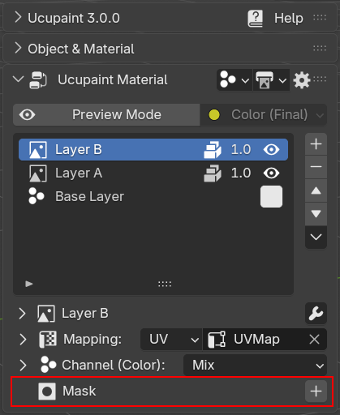
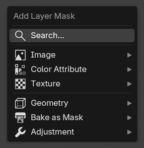
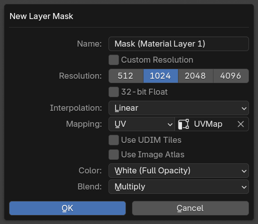
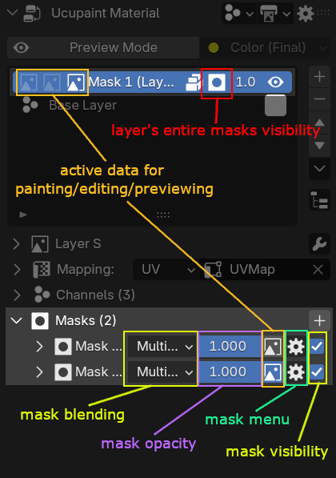
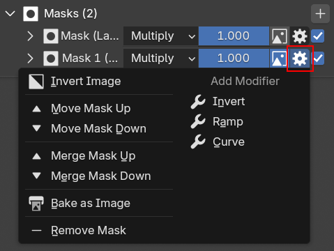
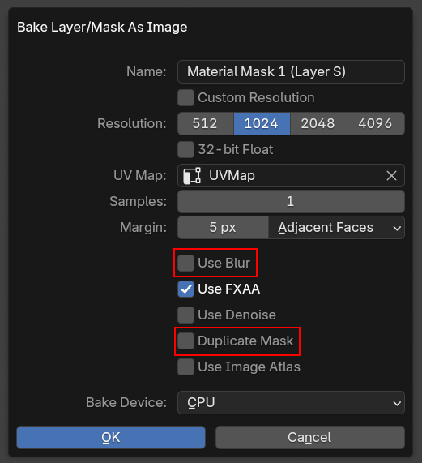
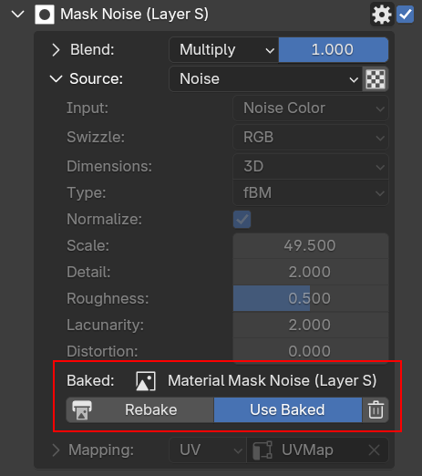
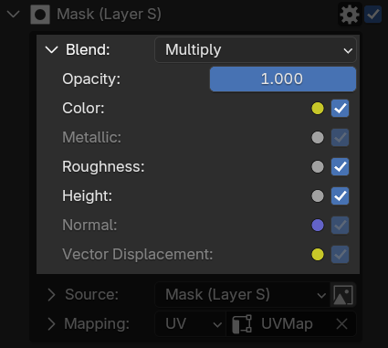

Mask¶
Masks can be useful to hide or show certain parts of a layer. It uses the value 1.0 (white) as visible and 0.0 (black) as transparent. You can access layer masks below the layer channels.
 |
|---|
| Layer masks panel |
Add New Mask¶
To add a new mask, just press the '+' button and you'll be given an options menu with many mask types. More details about layer mask types can be accessed here. You can add as many masks as you like in a single layer, and they don't have to be using the same mask types.
 |
|---|
| New layer mask menu |
New Image Mask Options¶
If you choose Image > New Image, a dialog box will appear.
 |
|---|
| New image mask dialog box |
Most of the options are similar to new image layers options, with some exceptions:
- Color: Color of the mask, white for full opacity and black for full transparency.
- Blend: Blending of the mask, the default is
Multiply, which means the mask will be multiplied to the layer alpha value.
Painting an Image Mask¶
Painting an image mask is as simple as painting black to hide and painting white to reveal the layer. This is a very useful way to non-destructively manipulate your layer.
| Adding and painting image masks |
UI related to Mask¶
If a layer has one or two masks, more icons will be visible in the layer list, and there will be an icon to enable/disable all masks assigned to the layer.
 |
|---|
| Explanation of mask-related UI |
Every mask their own of blending, opacity, and visibility toggle.
| Mask visibility and opacity demo |
The icon button between the mask opacity and mask menu is used to set the active data that will be used for painting (if the mask is an image) or editing (if the mask is a color attribute or color ID). It can also be used for previewing the data (more info in the Preview Mode page)
| Switching active data between masks and layer |
Mask Menu¶
Mask menu contain various operators, like for reordering the masks, merging, removing, baking, and adding modifier specific the the mask.
 |
|---|
| Menu for reordering masks and other things |
Baking a mask as an image¶
Baking a mask as an image is available in the mask menu. It will bake all kinds of masks with its mapping to an image.
 |
|---|
| Bake mask as image has some special options |
Bake mask as an image has similar options to baking data to a layer/mask. But it has extra options:
- Use Blur: Add blur to the baked image. It uses compositing nodes, so the blur result is much cleaner than using blur in the mapping options.
- Duplicate Mask: The bake result will become a new separate mask.
- Disable Current Mask: Only shows if
Duplicate Maskis enabled. This will make the original mask disabled after baking.
After you bake a mask as an image (unless you choose to duplicate the mask), you can switch back to the original unbaked data.
 |
|---|
| Baked data information and some buttons will appear after baking |
The screenshot above is an example of noise mask baked as an image. Notice that all the noise parameters and mappings are greyed out if you use the baked image. There's also a button to rebake and remove the baked image data.
Mask Blending¶
Other than setting the opacity and blend types, there are also options for the mask to only affect specific channels.
 |
|---|
| Mask blending panel |
If you notice in the screenshot above, there are some channels that have darker texts, that means those channels aren't enabled in the layer.
There are many benefits of baking a mask to an image. Some of them are:
- Improve performance for Blender's generated textures (Noise, Voronoi, etc.) since images have much faster performance than procedural textures
- Adding blur to a Color ID mask will make it possible to be usable for the height channel.
Mask Orders¶
Be aware that mask order in the mask panel is different than the layer list order. In the layer list, the blending is calculated from bottom to top, but in the mask panel, mask blending is calculated from top to bottom. The reason for this is that layer data is placed above the mask panel, and the first mask will be blended to the layer's alpha value, so the order makes more sense for it to be from top to bottom.
Mask Types¶
Ucupaint’s mask types are mostly the same as its layer types, with a few exceptions.
Color ID¶
Color ID will use a unique random color ID that will work as a mask. It uses a color attribute named __yp_color_id to store its color ID, when the color IDs match, it will be valued 1.0, otherwise it will be valued at 0.0. Like the color attribute, Ucupaint has a special editor to easily edit color IDs in edit mode.
| Color ID mask Demo |
Object Index¶
Object Index will mask objects with the same index. It's useful if one material is used with many objects. Make sure to expand the Object & Material panel to check the index of the selected object.
| Object Index Masks Demo |
Backface¶
Backface will mask out the backface of the surface. WARNING: This mask type can't be baked.